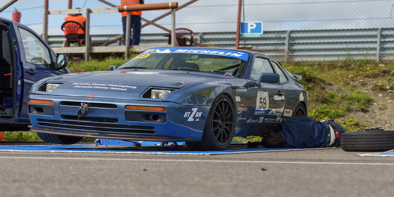

Beskrivning
En 944 S2 från 1990, race-redo. Chassi från HR, strippad interiör med helbur, bromsok från 944 Turbo S, glasfiberhuv -och tak, plexiglas bak. Bilen är väglaglig med vagnbok, senast besiktigad 2024.
Detaljer
- Årsmodell: 1990
- Mätarställning: 13240
- Nyrenoverad motor
- Ett set semi-slicks (använt); ett set regndeck (använt) medföljer
- Pris: 185 000 kr
Kontakt
För mer information, vänligen kontakta info@bilhandlare.se eller ring +46 123 456 789.